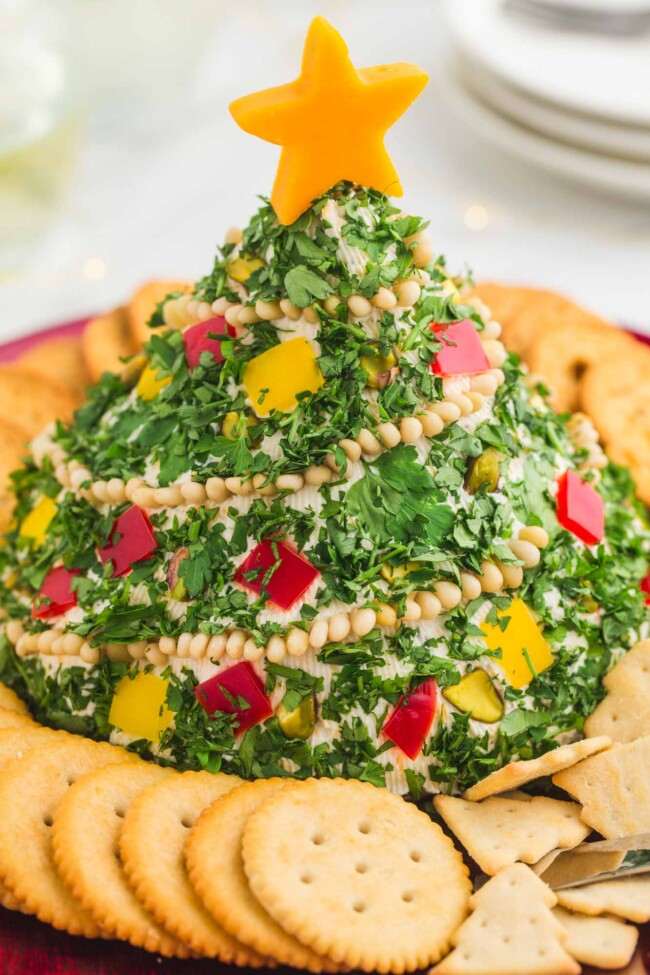

Christmas Tree Cheese Ball

Description:
Look no further for the perfect holiday appetizer!
This Christmas Tree Cheese Ball is an easy-to-make snack that will wow your holiday guests!
Ingredients
- 3 eight ounce (225g) packages of cream cheese softened
- 1 cup shredded sharp cheddar cheese
- 1/2 cup shredded Monterey Jack cheese
- 1 tablespoon chopped fresh parsley
- 1 teaspoon garlic powder
- 1 teaspoon onion powder
- 1 teaspoon Italian seasoning
- 1/2 teaspoon ground black pepper
- 1/2 teaspoon salt
To Decorate
- 3 tablespoons chopped fresh parsley
- 1/4 of each diced yellow and red bell peppers
- 1 tablespoon roughly chopped pistachios (Optional)
- 1 tablespoon pine nuts (Optional)
Instructions
-
In a large bowl, using a hand mixer, beat together the cheeses, then add in the parsley and seasonings
and beat until well combined.
-
Transfer the mixture onto plastic wrap, tightly cover and shape into a cone. Refrigerate for at least
2-3 hours, and preferably overnight.
-
Transfer the cheese ball cone onto a serving plate to decorate. Lightly press some of the parsley
into the cheese, then dot the pine nuts to create a string light effect. Decorate next with bell
pepper pieces and pistachio nuts to resemble baubles or ornaments.
-
Press in the remaining parsley to fill in any gaps. Then, cut a star from a thick slice of cheese using a small
cookie cutter. Attach it to the top of the tree with a toothpick to keep it secure.
-
Serve with crackers, bread, or sturdy chips
Notes
-
Nuts are Optional: You can make this a nut-free cheese ball. Add a few more pieces of yellow or red
pepper in place of them while decorating the tree.
-
Other Decorations: You can get creative with decorating your Christmas Tree Cheese Ball.
Try adding sliced green olives, roasted red peppers, pieces of red onion, or even chopped bacon.
-
Soften the Cream Cheese: Don't try to mix this up until your cream cheese has softened
to room temperature.